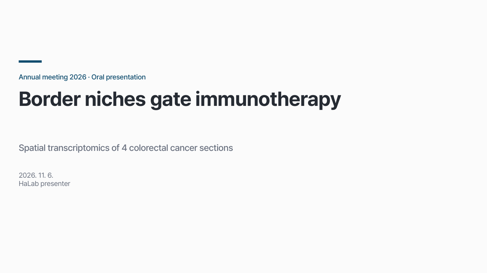
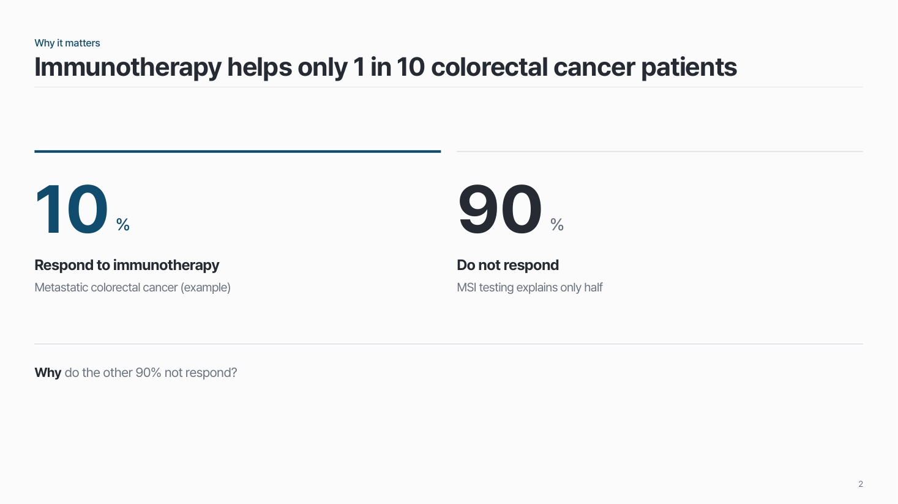
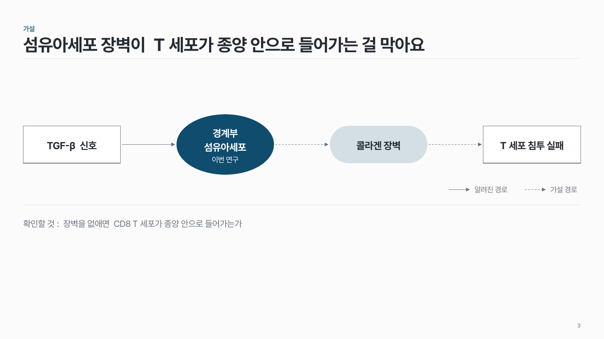
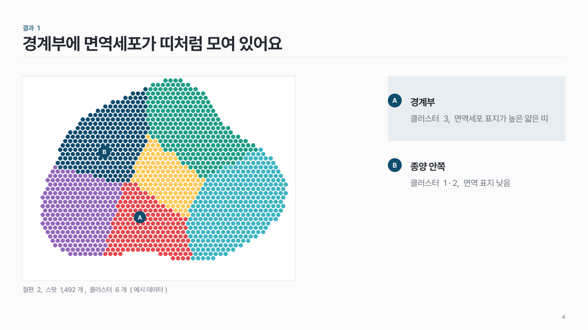
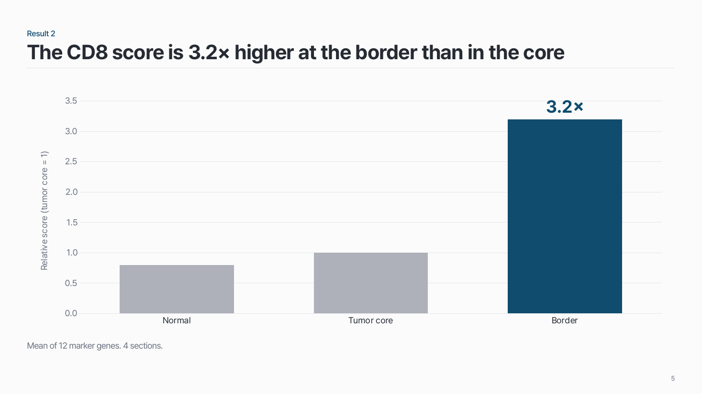
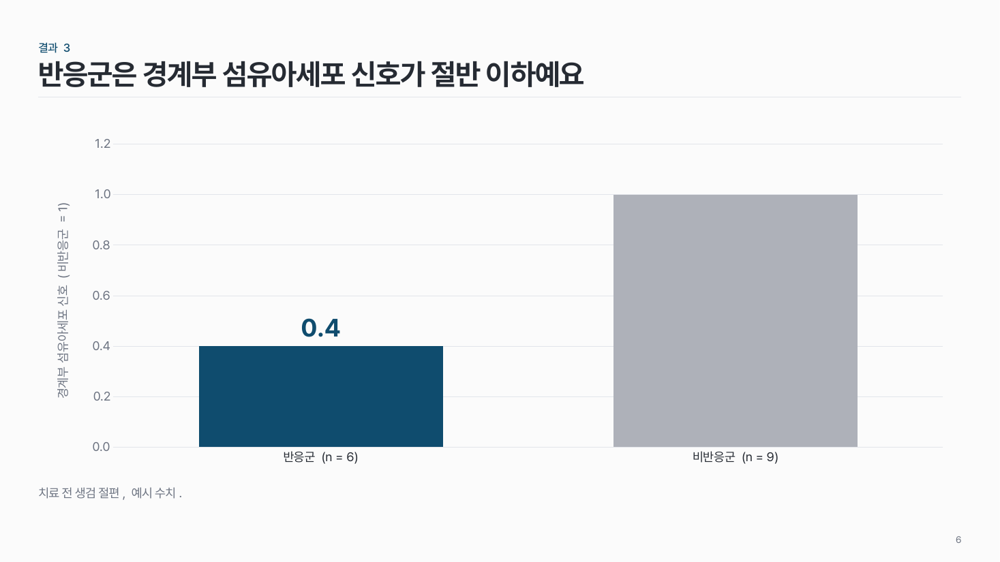
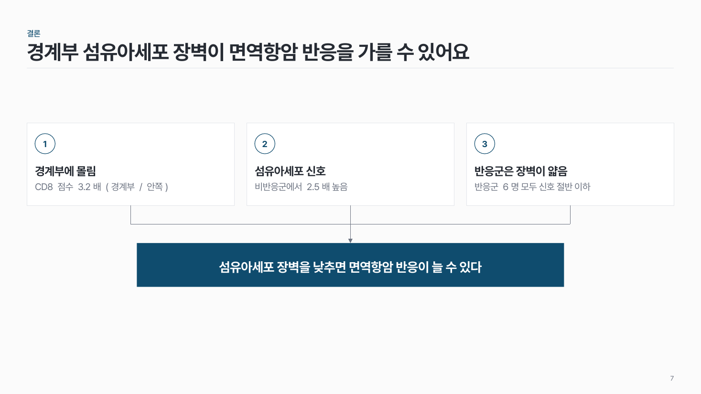
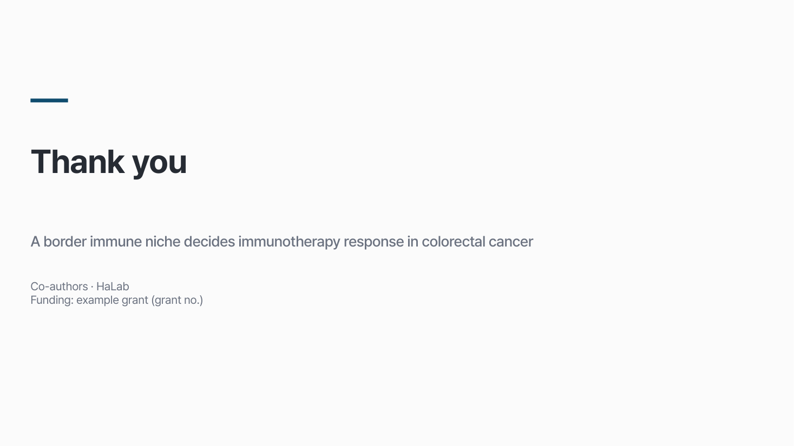

홈 › 자리별 덱 › 학회 구두 발표
학회 구두 발표
우리 연구를 처음 듣는 청중에게 핵심 결과를 전해요
10–15분 10–15장 질의응답 포함 여부 확인
이런 자리
청중이 우리 연구를 처음 들어요. 지난 이야기 없이 "왜 중요한가"부터 시작하고, 메시지에 필요한 결과만 보여 줘요.
- 흐름: 질문(왜 중요한가) → 가설 → 핵심 결과 3개 → 결론 한 장 → 감사
- 밀도는 낮게: 그림 한 장 + 메시지 한 줄이 기본이에요.
팁
- 첫 30초는 숫자로 보여 주는 문제나 구체적인 사례로 시작해요. "Today I will talk about…"으로 시작하지 않아요.
- 핵심 결과는 3개면 충분해요. 결과 하나 = 메시지 하나.
- 잘 안 된 결과는 빼요 (랩미팅과 반대).
- 결론 장은 질문받는 동안 띄워 둬요.
- 감사 장에는 공동저자, 연구실, 연구비(과제 번호)를 넣어요.
- 시간을 꼭 지켜요. 질문 시간이 발표 시간에 들어가는지 미리 확인해요.
덱 흐름
표지 → 질문 (왜 중요한가) → 가설 → 핵심 결과 3개 → 결론 · 감사
1
표지
제목에 핵심 결과를 담아요.

2
질문 (왜 중요한가)
첫 30초는 숫자로 보여 주는 문제로. "Today I will talk about…"으로 시작하지 않아요.

3
가설
질문에 대한 답을 한 문장으로.

4
핵심 결과 3개
결과 하나 = 메시지 하나. 3개면 충분해요. 잘 안 된 결과는 빼요.



5
결론 · 감사
결론 장은 질문받는 동안 띄워 둬요. 감사 장에는 공동저자 · 연구실 · 연구비.

